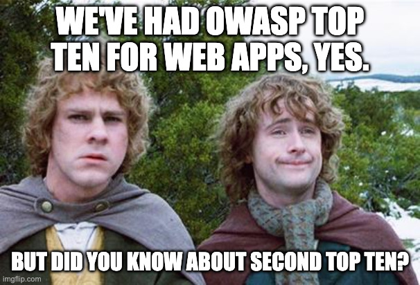

The control plane is the security plane
I've known and referenced the OWASP Top 10 Web Application Security Risks for at least a decade now. I've also regularly referenced the API Security Top 10 for back-end AppSec. I only found out about the OWASP Top 10 for Agentic Applications a month ago.
Published in December 2025 by the OWASP GenAI Security Project, it's a structured list of the ten highest-impact security risks specific to AI agent systems. It's the classic OWASP Top 10 approach, but this time it's for software that makes decisions instead of just responses.

As it turns out, there are far more OWASP Top Ten lists for k8s, mobile, etc. But the directiv.ai you know and love is focused on agentic apps. And as it turns out, many of the same ideas proposed in the Agentic OWASP Top 10 were already proposed in my first article.
I'll explore the similarities here, if only to reinforce the paradigm of "Models Propose, Systems Decide." I'll try not to break my arm patting myself on the back while doing so.
ASI02, "Tool Misuse and Exploitation," recommends something OWASP calls a Policy Enforcement Middleware, or Intent Gate. An external enforcement point that validates agent intent and arguments, enforces schemas and rate limits, and issues short-lived credentials before any tool invocation actually executes. The entry explicitly says to treat LLM and planner outputs as untrusted — inputs to be validated, not instructions to be followed.
Treat LLM or planner outputs as untrusted. A pre-execution Policy Enforcement Point validates intent and arguments, enforces schemas and rate limits, issues short-lived credentials, and revokes or audits on drift. — OWASP Agentic Top 10, ASI02
That's the policy-as-code platform. I proposed a tool: Open Policy Agent. Said differently, that's the piece of the system that answers "is this action allowed?", "does it require approval?", and "what constraints apply?" using deterministic, auditable logic that has nothing to do with what the model thinks the answer should be. Your policies dictate those answers. Not some clanker.
ASI08, "Cascading Failures," calls for immutable, time-stamped logs of all inter-agent messages, policy decisions, and execution outcomes to support forensic traceability and rollback when something unravels across a multi-agent chain.
That's the append-only run ledger. The pattern I described as: every input, tool call, policy decision, and output gets written somewhere you can't quietly edit later. Not because you're Rust Cohle. Because when you need one and you don't have it, you're genuinely stuck. Models can hallucinate. Systems of record can't.
And then ASI05 ("Unexpected Code Execution") and ASI10 ("Rogue Agents") both build around the same principle: the agent's non-deterministic behavior has to be bounded. An agent that can write back to its own instruction set, spawn subprocesses outside of controlled execution paths, or take actions that compound across downstream agents without a checkpoint? That's a system where the blast radius of any single bad decision is "whatever the agent happened to have access to." In other words, "the non-deterministic part of the system needs to end at the model boundary."
Two teams working the same problem from different angles, arriving at the same answer.
What OWASP sees that I didn't fully work out
I want to be honest about what the Agentic Top 10 covers that I had glossed over.
What this actually changes
There was a reasonable counter-argument when I was making the original architectural case: this is overkill for most use cases. Not every AI feature needs a full policy enforcement layer and an immutable event ledger. Some of that is still true.
But the OWASP Agentic Top 10 isn't a theoretical framework. Appendix D is a tracker of real incidents that happened in 2025, right as agentic systems scaled from pilots to actual production deployments.
These aren't warnings about what could go wrong. They're a list of what already went wrong in the first twelve months after agentic systems got serious traction. More on that in a future post.
The architectural argument I made back in January was "you need this to build something trustworthy." OWASP is making the same argument and adding: here are the people who found out the hard way that they didn't.
Models propose. Systems decide.
OWASP just published 78 pages explaining why that's not a design preference. No, it's a security requirement. And December 2025 seems like a reasonable time to have worked that out, given the year we apparently just had.
If you find yourself also thinking about these problems, let's nerd out. Drop me a line anytime at kyle@directiv.ai.